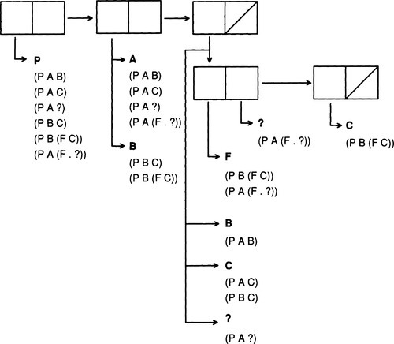

|
paip-ru
1
|
Само знание - сила.
-Francis Bacon (1561-1626)
Сила заключается в знании.
-Edward Feigenbaum
Stanford University Heuristic Programming Project
Знание есть Знание, и наоборот.
-Tee shirt
Stanford University Heuristic Programming Project
В 1960-х годах большая часть ИИ была сосредоточена на методах поиска. В частности, много работы было связано с доказательством теорем: формулированием проблемы в виде небольшого набора аксиом и поиском доказательства проблем. Неявное предположение заключалось в том, что сила заключена в механизме вывода - если бы мы могли просто найти правильную технику поиска, тогда все наши проблемы были бы решены, и все наши теоремы были бы доказаны.
Начиная с 1970-х годов это начало меняться. Подход к доказательству теорем не оправдал своих ожиданий. Работники ИИ постепенно начали понимать, что они не собираются решать NP-сложные проблемы, изобретая умный алгоритм вывода. Общие механизмы логического вывода, которые работали на игрушечных примерах, просто не масштабировались, когда размер проблемы достигал тысяч (а иногда и десятков).
Альтернативой был подход экспертной системы. Ключом к решению сложных проблем было усвоение особых правил, позволяющих разбить проблему на более простые. Согласно Фейгенбауму, урок, извлеченный из экспертных систем, таких как MYCIN (который мы увидим в главе 16), заключается в том, что выбор механизма вывода не так важен, как наличие правильных знаний. С этой точки зрения не имеет большого значения, использует ли MYCIN прямую или обратную цепочку, или использует ли он факторы достоверности, вероятности или теорию нечетких множеств. Важно то, что мы знаем, что псевдомонады - это грамотрицательные палочковидные организмы, которые могут инфицировать пациентов с ослабленной иммунной системой. Другими словами, ключевая проблема - получение и представление знаний.
Хотя подход экспертной системы имел некоторые успехи, он также имел недостатки, и исследователи были заинтересованы в изучении ограничений этой новой технологии и понимании того, как именно она работает. Многих беспокоило то, что значение знаний, используемых в некоторых системах, никогда не было четко определено. Например, означает ли утверждение (color apple red)-цвет яблока красный, что конкретное яблоко красное, все яблоки красные или что некоторые/большинство яблок красные? Область представления знаний сосредоточена на обеспечении четкой семантики для таких представлений, а также предоставлении алгоритмов для манипулирования знаниями. Большое внимание уделялось поиску компромисса между выразительностью и эффективностью. Эффективный язык - это такой язык, для которого можно быстро ответить на все запросы (или, по крайней мере, на средний запрос). Если мы хотим гарантировать быстрое получение ответов на запросы, мы должны ограничить то, что может быть выражено на языке.
В конце 1980-х годов ряд результатов поставил под сомнение надежды найти эффективный язык с хоть сколько-нибудь разумной степенью выразительности. Используя математические методы, основанные на анализе наихудшего случая, было показано, что даже кажущиеся тривиальными языки были трудноразрешимыми - в худшем случае требовалось экспоненциальное количество времени, чтобы ответить на простой запрос.
Таким образом, в 1990-х годах акцент сместился на представление знаний и рассуждения, область, которая охватывает как выразительность, так и эффективность языков, но признает, что средний случай более важен, чем наихудший случай. Никакие знания не помогут решить неразрешимую проблему в худшем случае, но на практике худший случай случается редко.
Исследователи искусственного интеллекта исследовали сотни языков представления знаний, пытаясь найти удобные, выразительные и эффективные языки. Языки можно разделить на четыре группы, в зависимости от того, какова основная единица представления. Вот четыре категории с некоторыми примерами:
Мы уже имели дело с логическими языками, такими как Prolog.
Сетевые языки можно рассматривать как синтаксическую вариацию логических языков. Связь L между узлами A и B - это просто еще один способ выражения логической связи L(A, B). Разница в том, что сетевые языки относятся к своим ссылкам более серьезно: они предназначены для возможности быть реализованы непосредственно с помощью указателей в компьютере, а вывод выполняется путем обхода этих указателей. Таким образом, размещение ссылки L между A и B не только утверждает, что L(A, B) истинно, но также говорит кое-что о том, как следует искать в базе знаний.
Объектно-ориентированные языки также можно рассматривать как синтаксические варианты исчисления предикатов. Вот утверждение на типичном языке фреймов для заполнения слотов:
Это эквивалентно логической формуле:
∃p: person(p) ∧ name(p,Jan) ∧ age(p,32)
Фреймовое обозначение имеет то преимущество, что, по мнению некоторых, его легче читать. Однако фреймовое обозначение менее выразительно. Невозможно сказать, что человека зовут Ян или Джон, или что ему не 34 года. Конечно, в исчислении предикатов такие утверждения можно легко сделать.
Наконец, процедурные языки должны быть противопоставлены языкам представления: процедурные языки вычисляют ответы без явного представления знаний.
Существуют также гибридные языки представления, которые используют разные методы для кодирования разных видов знаний. В семействе языков KL-ONE используются, например, как логические формулы, так и объекты, объединенные в сеть. Многие фреймовые языки допускают процедурное присоединение - метод, который использует произвольные процедуры для вычисления значений для выражений, которые неудобно или невозможно выразить на самом языке фреймов.
До сих пор многие из наших представлений были основаны на исчислении предикатов, системе обозначений, занимающей особое место в ИИ: она служит универсальным стандартом, по которому определяются и вычисляются другие представления. В предыдущем разделе был приведен пример выражения из фреймового языка. Язык фреймов может иметь много достоинств с точки зрения простоты использования синтаксиса или эффективности внутреннего представления данных. Однако, чтобы понять, что означают выражения в языке, должно быть четкое определение. Чаще всего это определение дается в терминах исчисления предикатов.
Представление исчисления предикатов предполагает универсум индивидов с отношениями и функциями этих индивидов, а также предложения, сформированные путем комбинирования отношений с логическими связками and(и), or(или) и not(не). Философы и психологи будут спорить о том, насколько уместно исчисление предикатов в качестве модели человеческого мышления, но одно ясно: исчисления предикатов достаточно, чтобы представить все, что может быть представлено в цифровом компьютере. Это легко показать: если в памяти компьютера есть n битов, а уравнение bi = 1 означает, что бит i включен(on), тогда все состояние компьютера представимо конъюнкцией, например:
b0=0∧b1=0∧b2=1...∧bn=0
Как только мы можем представить состояние компьютера, становится возможным представить любую компьютерную программу в исчислении предикатов как набор аксиом, отображающих одно состояние на другое. Таким образом, показано, что исчисление предикатов является достаточным языком для представления всего, что происходит внутри компьютера - его можно использовать как инструмент для анализа любой программы извне.
Это не доказывает, что исчисление предикатов является подходящим инструментом для всех приложений. Есть веские причины, по которым мы можем захотеть представить знания в форме, которая сильно отличается от исчисления предикатов, и манипулировать знаниями с помощью процедур, которые сильно отличаются от логического вывода. Но мы по-прежнему должны суметь описать нашу систему в терминах аксиом исчисления предикатов и доказать теоремы о ней. Делать меньше - значит быть небрежным. Например, мы можем захотеть манипулировать числами внутри компьютера, используя арифметические инструкции, встроенные в ЦП, а не манипулируя аксиомами исчисления предикатов, но когда мы пишем процедуру извлечения квадратного корня, она лучше удовлетворяет аксиоме:
x=y=>yxy=x
Исчисление предикатов также служит другой цели: как инструмент, который может использоваться программой, а не в программе. Все программы должны манипулировать данными, а некоторые программы будут манипулировать данными, которые, как считается, находятся в нотации исчисления предикатов. Именно этим использованием мы и займемся.
Исчисление предикатов позволяет легко начать записывать факты о предметной области. Но самая простая версия исчисления предикатов страдает рядом серьезных ограничений:
Сегодня преобладает мнение, что лучше всего решать эти проблемы с помощью двойной атаки, которая находится как внутри, так и вне исчисления предикатов. Считается хорошей идеей изобрести новые обозначения для решения проблем - как для удобства, так и для облегчения работы специалистов по рассуждению, которые более эффективны, чем средство доказательства теорем общего назначения. Однако также важно скрупулезно определить значение новой нотации в терминах знакомой нотации исчисления предикатов. Как выразился Дрю Макдермотт: "Никаких обозначений без обозначений!"(No notation without denotation!) (1978).
В этой главе мы покажем, как новые обозначения (и их соответствующие значения) могут быть использованы для расширения существующей системы представлений и рассуждений. В качестве языка для расширения выбран Пролог. Это не означает одобрения Пролога как языка окончательного представления знаний. Скорее, он предназначен исключительно для того, чтобы дать нам ясную и знакомую основу для построения.
Пролог был предложен как ответ на проблему программирования в логике. Почему он не принят в качестве универсального языка представления? Вероятно потому, что Пролог - это компромисс между языком представления и языком программирования. При наличии двух логически эквивалентных спецификаций одна может быть эффективной программой на Прологе, а другая - нет. Знаменитое уравнение Ковальского "*algorithm = logic + control"* (алгоритм = логика + управление) выражает пределы одной только логики: логика = алгоритм - управление. Многие задачи (особенно в ИИ) имеют большие или бесконечные пространства поиска, и если Прологу не дается какой-либо совет по как найти это место, ответ не найдется за разумный промежуток времени.
Проблемы Пролога делятся на три класса. Во-первых, чтобы сделать язык эффективным, его выразительность была ограничена. Невозможно утверждать, что человека зовут Ян или Джон в Прологе (хотя можно спросить, является ли имя человека одним из таких). Точно так же нельзя утверждать, что факт ложен; Пролог не делает различий между ложным и неизвестным. Во-вторых, механизм вывода Пролога не является ни надежным, ни полным. Поскольку он не проверяет круговую унификацию, он может давать неправильные ответы, а поскольку он ищет в глубину, он может пропустить правильные ответы. В-третьих, в Prolog нет хорошего способа добавления управляющей информации к базовой логике, что делает его неэффективным для решения определенных проблем.
Если Пролог занимается логическим программированием, это не полная знакомая нам логика предикатов. Основная проблема заключается в том, что Пролог не может выражать определенные виды неопределенных фактов. Он может отражать определенные факты: столица Род-Айленда - Провиденс. Он может представлять собой соединение(conjunctions) фактов: столица Род-Айленда - Провиденс, и столица Калифорнии - Сакраменто. Но он не может представлять собой разобщение(disjunctions) или отрицание(negations): что столица Калифорнии не Лос-Анджелес или что столица Нью-Йорка либо Нью-Йорк, либо Олбани. Мы могли бы попробовать это:
но заметьте, что эти последние два факта касаются отношения не(not) и или(or), а не отношения capital(столица). Таким образом, они не будут рассматриваться, когда мы зададим вопрос о столице(capital). К счастью, утверждение "Either NYC or Albany is the capital of NY"(Либо Нью-Йорк, либо Олбани является столицей штата Нью-Йорк) можно перефразировать как два утверждения: "Albany is the capital of NY if NYC is not"(Олбани является столицей Нью-Йорка, если Нью-Йорк не является) и "NYC is the capital of NY if Albany is not:"(Нью-Йорк является столицей Нью-Йорка, если Олбани не является):
К сожалению, не(not) Пролог отличается от логического не(not). Когда Prolog отвечает "no" на запрос, это означает, что запрос не может быть доказан на основе известных фактов. Если все известно, то запрос должен быть ложным, но если есть факты, которые неизвестны, запрос действительно может быть истинным. В этом нет ничего удивительного; мы не можем ожидать, что программа предложит ответы, используя знания, которых у неё нет. Но в этом случае возникают проблемы. Учитывая предыдущие два предложения и запрос (capital ?c NY), Prolog перейдет в бесконечный цикл. Если мы удалим первое предложение, Пролог потерпит неудачу, при доказательстве, что Олбани является столицей, и, следовательно, придет к выводу, что это Нью-Йорк. Если убрать второй пункт, будет сделан противоположный вывод.
Проблема в том, что Пролог приравнивает "не доказано" к "ложному". Пролог делает то, что называется предположением о закрытом мире - он предполагает, что знает все, что истинно. Предположение о закрытом мире является разумным для большинства программ, потому что программист знает всю необходимую информацию. Но для представления знаний в целом нам нужна система, которая не делает предположение о замкнутом мире и имеет три способа ответить на запрос: "да"(yes), "нет"(no) или "неизвестно"(unknown). В этом примере мы не сможем сделать вывод о том, что столица Нью-Йорка является или не является Нью-Йорком, поэтому мы не сможем сделать никаких выводов об Олбани.
В качестве другого примера рассмотрим предложения:
С этими правилами запрос (? (damned)) следует логически ответить "yes"(да). Более того, должна быть возможность сделать вывод (damned)(проклятый) даже без расследования, доказуемо ли (do). Пролог сначала пытается доказать (do)(делать). Если это удается, то (damned) доказано. В любом случае, Prolog затем снова пытается доказать (do), и на этот раз, если доказательство не удастся, то (damned) доказано. Таким образом, Prolog выполняет одно и то же доказательство дважды, когда в этом нет необходимости. Введение отрицания разрушает простую схему вычисления Пролога. Теперь уже недостаточно рассматривать по одному предложению за раз. Скорее, несколько предложений должны рассматриваться вместе, если мы хотим получить все правильные ответы.
Роберт Мур, 1982 дает хороший пример силы дизъюнктивного мышления. Его проблема касалась трех цветных блоков, но мы обновим ее для трех стран. Предположим, что некая восточноевропейская страна E только что решила, останется ли она под коммунистическим правлением или станет демократией, но мы не знаем результата этого решения. E находится между демократией D и коммунистической страной C:
Возникает вопрос: есть ли коммунистическая страна рядом с демократией? Мур отмечает, что ответ - "да", но для того, чтобы это обнаружить, необходимо рассуждать по конкретным случаям. Если E - демократия, то это рядом с C, и ответ - да. Но если E коммунистическая, то она стоит рядом с D, и ответ все равно положительный. Поскольку это единственные две возможности, в любом случае ответ должен быть положительным. Логические рассуждения дают нам правильный ответ, а Пролог - нет. Мы можем описать проблему с помощью следующих семи утверждений и одного запроса, но Пролог не может иметь дело с или в окончательном утверждении.
Мы увидели, что Пролог не очень хорош для представления дизъюнкций и отрицаний. Ему также трудно представить экзистенциальные элементы. Рассмотрим следующее утверждение на английском языке, logic и Prolog:
Jan likes everyone.(Яну все нравятся).
∀ x person(x) => likes(Jan,x)
Перевод Пролога точен. Но нет хорошего перевода для фразы "Jan likes someone"(Ян любит кого-то). Ближайшее, что мы можем получить:
Jan likes someone.(Ян любит кого-то)
∃ x person(x) => likes(Jan,x)
Здесь мы изобрели новый символ p1, чтобы представить неизвестного человека, который нравится Яну, и заявили, что p1 - это человек. Обратите внимание, что p1 - это константа, а не переменная. Такое использование константы для представления определенной, но неизвестной сущности называется константой Сколема в честь логика Торальфа Сколема (1887-1963). Смысл в том, что p1 может быть равно какому-то(любому) другому человеку, о котором мы знаем. Если мы выясним, что Адриан - это человек, который нравится Яну, то по логике мы можем просто добавить утверждение p1 = Adrian. Но это не работает в Prolog, потому что Prolog неявно использует предположение об уникальности имени - все атомы представляют отдельных людей.
Константа Сколема - это просто частный случай функции Сколема - неизвестной сущности, которая зависит от одной или нескольких переменных. Например, чтобы представить "Всем кто-то нравится"(Everyone likes someone) мы могли бы использовать:
Everyone likes someone.(Всем кто-то нравится).
∀y∃ x person (x) => likes (y, x)
Здесь p2 - функция Сколема, которая зависит от переменной ?y. Другими словами, всем нравится какой-то человек(everyone likes some person), но не обязательно один и тот же человек.
В предыдущем разделе мы видели, что Prolog променял выразительность в пользу эффективности. В этом разделе исследуются пределы выразительности исчисления предикатов.
Предположим, мы хотим утверждать, что львы, тигры и медведи - это разные животные. В исчислении предикатов или в Прологе мы могли бы написать импликацию для каждого случая:
Эти выводы позволяют нам доказать, что любой известный лев, тигр или медведь на самом деле является животным. Однако они не позволяют нам ответить на вопрос "Какие бывают виды животных?" Нетрудно представить расширение Prolog таким образом, чтобы запрос
было бы законным. Однако оказывается, что это неверный Пролог, и это даже не действительное исчисление предикатов первого порядка (first-order predicate calculus или FOPC). В FOPC переменные должны меняться над константами языка, а не над отношениями или предложениями. Исчисление предикатов более высокого порядка снимает это ограничение, но имеет более сложную теорию доказательств.
Непонятно даже, какими должны быть значения ?proposition в запросе выше. Несомненно, (lion ?x) будет правильным ответом, но то же самое будет с `(animal ?x), (or (tiger ?x) (bear ?x)) и бесконечным количеством других предложений. Возможно, нам следует иметь два типа запросов: один спрашивает о "видах"("kinds"), а другой спрашивает о утверждениях(propositions).
Есть и другие вопросы, которые мы могли бы задать об отношениях. Так же, как полезно объявлять типы параметров функции Lisp, может быть полезно объявить типы параметров отношения, а затем запросить эти типы. Например, мы можем сказать, что между человеком и объектом существует отношение likes(нравится).
В общем, предложение в исчислении предикатов, в котором в качестве термина используется отношение или предложение, называется предложением более высокого порядка(higher-order sentence). Когда мы начинаем разрешать выражения более высокого порядка, возникают некоторые довольно тонкие проблемы. Разрешение предложениям в исчислении говорить об истинности других предложений может привести к парадоксу: истинно ли предложение "This sentence is false"(Это предложение ложно)?
Исчисление предикатов определяется в терминах вселенной индивидов, их свойств и отношений. Таким образом, оно хорошо подходит для модели мира, которая выбирает людей и классифицирует их: человек здесь, здание там, тротуар между ними. Но насколько хорошо работает исчисление предикатов в мире непрерывных субстанций? Представьте себе водоем, состоящий из неопределенного числа составляющих, которые все являются водой, при этом часть воды испаряется в воздух и поднимается, образуя облака. Совершенно не очевидно, как здесь определять индивидуумов. Однако Патрик Хейз показал, что когда сделан правильный выбор, исчисление предикатов может достаточно хорошо описать такую ситуацию. Детали в Hayes 1985.
Исчисление предикатов очень хорошо подходит для четких математических категорий: a; является треугольником тогда и только тогда, когда x - многоугольник с тремя сторонами. К сожалению, большинство категорий, с которыми люди сталкиваются в повседневной жизни, не определены так строго. Категория друг(friend) относится к тем, к кому вы испытываете в основном положительные чувства, кому вы обычно можете доверять, и так далее. Это "определение" не является набором необходимых и достаточных условий, а, скорее, представляет собой неограниченный список плохо определенных качеств, которые сильно коррелируют с категорией друг. У нас есть прототип того, каким должен быть идеальный друг, но нет четких границ, отделяющих друга, скажем, от знакомого. в контексте вашей семейной жизни.
Существуют версии исчисления предикатов, которые допускают такие кванторы, как "most"(большинство) в дополнение к "for all"(для всех) и "there exists"(существует), и были попытки определить прототипы и измерить расстояния от них. Однако единого мнения о подходе к этой проблеме нет.
Поскольку Prolog выполняет поиск в глубину, он может попасть в одну ветвь области поиска и никогда не исследовать другие ветки. Эта проблема может проявиться, например, при попытке определить коммутативное отношение, например sibling(брат/сестра):
С помощью этих пунктов мы надеемся сделать вывод, что Ли(Lee) является братом Ким(Kim), а Ким - Ли. Давай посмотрим что происходит:
Мы получаем ожидаемые выводы, но они выводятся неоднократно, потому что коммутативное предложение для братьев и сестер применяется снова и снова. Это раздражает, но не критично. Намного хуже, когда мы спрашиваем (?- (sibling fred ?x)). Этот запрос повторяется вечно. К счастью, этот конкретный пример можно легко исправить: просто введите два предиката, один для фактов уровня базы данных, а другой на уровне аксиом и запросов:
Еще одно исправление - изменить интерпретатор так, чтобы он падал при обнаружении повторяющейся цели. Это был подход, использованный в GPS. Однако, даже если мы исключим повторяющиеся цели, Prolog все равно может застрять в одной ветви поиска в глубину. Рассмотрим пример:
Эти правила определяют натуральные числа (неотрицательные целые числа). Мы можем использовать правила либо для подтверждения запросов типа (natural (1 + (1 + (1 + 0)))), либо для генерации натуральных чисел, как в запросе (natural ?n). Пока все нормально. Но предположим, что мы хотим определить все целые числа. Один из подходов был бы таким:
Эти правила говорят, что 0 - это целое число, а любое n - целое, если n + 1 целое, и n + 1 - если n целое. Хотя эти правила верны в логическом смысле, они не работают как программа на Прологе. Запрос (integer *x*) приведет к бесконечной серии постоянно растущих запросов: (integer (1 + *x*)), (integer (1 + (1 + *x*))) и т.д. Каждая цель отличается, поэтому никакая проверка не может остановить рекурсию.
В зависимости от вашей интерпретации бесконечных деревьев эта проверка может или не может вызвать проблемы в Прологе. Большинство систем Prolog не выполняют проверку встречаемости(occurs check). Причина в том, что объединение переменной с некоторым значением является в Прологе эквивалентом присвоения значения переменной, и программисты ожидают, что такая базовая операция будет быстрой. Если проверка встречаемости отключена, это действительно будет быстро. При включенной проверке требуется время, пропорциональное размеру значения, что считается неприемлемым.
Если проверка встречаемости отключена, программист получает преимущество быстрой унификации, но может столкнуться с проблемами с круговыми структурами. Обратите внимание на следующие предложения:
В этих предложениях говорится, что для любого человека мать этого человека и отец этого человека являются родителями этого человека. Теперь давайте спросим, есть ли человек, который является своим собственным родителем:
> (? (parent ?y ?y))
Система нашла ответ, где ?y = (mother-of ?y). Однако ответ не может быть напечатан, потому что deref (или subst-bindings в интерпретаторе) переходит в бесконечное число циклов пытаясь выяснить, что такое ?y`. Без печати не было бы бесконечного цикла:
> (? (self-parent))
Запрос self-parent завершается успешно дважды: один раз с предложением mother и один раз с предложением father(отца). Правильно ли поступил здесь Prolog? Это зависит от вашей интерпретации бесконечных циклических деревьев. Если вы принимаете их как допустимые объекты, то ответ будет однозначным. Если вы этого не сделаете, то пропуск проверки встречаемости делает Prolog ненадежным: он может давать неправильные ответы.
Та же проблема возникает, если мы спросим, есть ли какие-нибудь группы, которые включают себя в качестве членов. Запрос (member ?set ?set) будет успешным, но мы не сможем распечатать значение ?set.
Наш компилятор пролога предназначен для обработки "программоподобных" предикатов - предикатов с небольшим количеством правил, возможно, со сложными телами. Компилятор гораздо хуже справляется с "табличноподобными" предикатами - предикатами с большим количеством простых фактов. Рассмотрим предикат 'pb`, который кодирует факты телефонной книги в виде:
Предположим, у нас есть несколько тысяч таких записей. Типичный запрос к этой базе данных:
Было бы неэффективно искать факты линейно, сопоставляя каждый из них с запросом. Также было бы неэффективно перекомпилировать весь предикат pb/2 каждый раз, когда добавляется новая запись. Но это именно то, что делает наш компилятор.
Решения трех проблем - выразительности, полноты и индексации - будут рассмотрены в обратном порядке, так что самая сложная - выразительность - будет последней.
Лучшее решение проблемы телефонной книги - это индексировать каждую запись телефонной книги в некоторой таблице, которая упрощает добавление, удаление и извлечение записей. Этим мы и займемся в этом разделе. Мы разработаем расширение структуры данных trie или дерева дискриминации, построенное в раздел 10.5 (страница 344).
Создание дерева дискриминации(различения) для фактов Пролога осложняется наличием переменных как в фактах, так и в запросе. Либо факты с переменными в них нужно будет проиндексировать в нескольких местах, либо запросы с переменными придется искать в нескольких местах, либо и то, и другое. Мы также должны решить, будет ли само дерево дискриминации обрабатывать привязку переменных или будет просто возвращать совпадения кандидатов, которые затем проверяются каким-либо другим процессом. Непонятно, что хранить в дереве дискриминации: копии фактов, функции, которым можно передавать продолжения, или что-то еще. По мере продолжения работы появятся новые варианты дизайна.
Трудно сделать выбор дизайна, когда мы не знаем точно, как будет использоваться система. Мы не знаем, как будут выглядеть типичные факты или типичные запросы. Поэтому мы разработаем довольно абстрактный инструмент, забыв на время, что он будет использоваться для индексации фактов Пролога.
Мы рассмотрим проблему дерева дискриминации, в котором и ключи, и запросы являются структурами предикатов с подстановочными знаками. Подстановочный знак - это переменная, но с пониманием того, что привязки переменной нет; каждый экземпляр переменной может соответствовать чему угодно. Структура предиката - это список, первым элементом которого является неизменяемый символ. Дерево дискриминации поддерживает три операции:
index-добавить в дерево пару ключ/значениеfetch-найти все значения, которые потенциально соответствуют заданному ключуunindex-удалить все пары ключ/значение, соответствующие заданному ключуЧтобы оценить проблемы, нам нужен пример. Предположим, у нас есть следующие шесть ключей для индексации. Для простоты значение каждого ключа будет самим ключом:
Теперь предположим, что запрос (p ?y c). Это должно соответствовать ключам 2, 3 и 4. Как мы можем эффективно получить этот набор? Одна из идей - перечислить пары ключ/значение под каждым атомом, который они содержат. Таким образом, все шесть будут перечислены под атомом p, а 2, 4 и 5 будут перечислены под атомом c. Проверка унификации может исключить 5, но нам все равно не хватит 3. Ключ 3 (и каждый ключ с переменной в нем) потенциально может содержать атом c. Таким образом, чтобы получить правильные ответы при таком подходе, нам нужно будет проиндексировать каждый ключ, который содержит переменную под каждым атомом, что не является привлекательной ситуацией.
Альтернативой является создание индексов на основе как атомов, так и их положения(позиции). Итак, теперь мы будем извлекать все ключи, у которых есть c во второй позиции аргумента: 2 и 4, плюс ключи, у которых есть переменная в качестве второго аргумента: 3. Этот подход работает намного лучше, по крайней мере, для показанного примера. Чтобы создать индекс, мы, по сути, накладываем структуру списка всех ключей друг на друга, чтобы получить одно большое дерево дискриминации. В каждой позиции в дереве мы создаем индекс ключей, которые имеют либо атом, либо переменную в этой позиции. Рисунок 14.1 показывает дерево дискриминации для шести ключей.
| []() |
|---|

|
| Figure 14.1: Discrimination Tree with Six Keys |
Рассмотрим запрос (p ?y c). В качестве индекса можно использовать либо p, либо c. p в позиции предиката возвращает все шесть ключей. Но c во второй позиции аргумента возвращает только три ключа: 2 и 4, которые индексируются под самой c, и 3, которые индексируются под переменной в этой позиции.
Теперь рассмотрим запрос (p ?y (f ?z)). Опять же, p служит индексом для всех шести ключей. f служит индексом только для трех ключей: 5 и 6, которые индексируются непосредственно под f в этой позиции, и 3, который индексируется под переменной в позиции вдоль пути, ведущего к f. Как правило, необходимо учитывать все ключи, проиндексированные под переменными по пути.
Механизм извлечения может перегружать извлечиние. Учитывая запрос (p a (f ?x)), атом p снова получит все шесть ключей, атом a получит 1, 2, 3 и 6, а f снова получит 5, 6 и 3. Таким образом, f извлекает самый короткий список и, следовательно, он будет использоваться для определения окончательного результата. Но ключ 5 - это (p b (f c)), что не соответствует запросу (pa (f ?x)).
Мы могли бы устранить эту проблему, пересекая все списки вместо того, чтобы просто выбирать самый короткий список. Возможно, возможно выполнить пересечение с использованием битовых векторов, но, вероятно, делать это слишком медленно и расточительно, по использованному пространству, с помощью списков. Даже если бы мы действительно пересечем ключи, мы все равно выполняли бы повторное извлечение по двум причинам. Во-первых, мы не используем nil в качестве индекса, поэтому мы игнорируем разницу между (f ?x) и (f . ?x). Во-вторых, мы используем семантику подстановочных знаков(wild-card), поэтому запрос (p ?x ?x) извлечет все шесть ключей, тогда как он должен получить только три. Из-за этих проблем мы делаем выбор дизайна: сначала мы создадим функцию извлечения базы данных, которая извлекает потенциальные совпадения, а затем позаботимся о процессе унификации, который устранит несоответствия.
Мы готовы к более полному уточнению стратегии индексации:
Стратегия поиска такова:
f в позиции caaddr извлекает значение 5, но он также должен извлекать значение 3, потому что третий ключ имеет переменную в позиции caddr, а caddr находится "выше/над" caaddr.Важно, чтобы функция поиска выполнялась быстро. Если она медленна, мы могли бы точно сопоставить каждый ключ в таблице линейно. Поэтому мы позаботимся о том, чтобы каждую часть реализовать эффективно. Обратите внимание, что нам нужно будет сравнить длину списков, чтобы выбрать самый короткий вариант. Конечно, сравнивать длины с помощью length тривиально, но length требует обхода всего списка. Мы можем добиться большего, если явно сохраним длину списка. Список с его длиной будет называться nlist. Он будет реализован как cons-ячейка, содержащая количество элементов и список самих элементов. Альтернативой было бы использование расширяемых векторов с указателями заполнения(заполннености).
Теперь нам нужно место для хранения этих nlists. Мы построим базу данных из узлов дерева дискриминации, называемых узлами dtree. Каждый узел dtree имеет поле для хранения индекса переменной, индексов атомов и указателей на два подузла, один для first(первого) и один для rest(остальных). Мы реализуем dtrees как векторы для повышения эффективности и потому, что нам никогда не понадобится предикат dtree-p.
Для каждого предиката будет храниться отдельное dtree. Поскольку предикаты должны быть символами, можно сохранить деревья dtrees в списке свойств предиката. В большинстве реализаций это будет быстрее, чем альтернативы, такие как хеш-таблицы.
Функция index принимает отношение как ключ и сохраняет его в dtree для предиката отношения. Она вызывает dtree-index, чтобы выполнить всю работу по сохранению значения под соответствующими индексами для ключа в соответствующем узле dtree.
Индексы атомов хранятся в списке ассоциаций(a-list). Списки свойств не будут работать, потому что они производят поиск с помощью eq, а атомы могут быть числами, которые не обязательно являются eq. Списки ассоциаций по умолчанию производят поиск с использованием eql. Альтернативой может быть использование хеш-таблиц для индекса или даже использование схемы, по которой начинается работа со списков ассоциаций и переключается на хеш-таблицу, когда количество записей становится большим. Я использую lookup, чтобы найти значение ключа в списке свойств. Эта функция и ее метод setf определены на стр. 896.
Теперь мы определяем функцию для проверки процедуры индексирования. Сравните вывод с рис. 14.1.
Следующим шагом будет получение совпадений из базы данных dtree. Функция fetch принимает запрос, который должен быть допустимым отношением, в качестве аргумента и возвращает список возможных совпадений. Она вызывает dtree-fetch для выполнения работы:
dtree-fetch, конечно, должна передавать запрос и dtree, но ей также передаются четыре дополнительных аргумента. Во-первых, мы должны накапливать совпадения, индексированные по переменным, когда мы ищем в dtree. Таким образом, два аргумента используются для передачи фактических совпадений и подсчета их общего количества. Во-вторых, мы хотим, чтобы dtree-fetch возвращала самый короткий из возможных индексов, поэтому мы передаем ей самый короткий ответ, найденный на данный момент, и размер самого короткого ответа. Таким образом, по мере того, как она продвигается вниз по дереву, накапливая значения, индексированные по переменным, она может постоянно сравнивать размер развивающегося ответа с лучшим ответом, найденным на данный момент.
Мы могли бы использовать nlists для передачи пар счет/значения, но nlists поддерживают только операцию push, когда добавляется один новый элемент. Нам нужно объединить списки значений, поступающих из индексов переменных, со значениями, индексированными под атомом. Добавление(append) стоит дорого, поэтому вместо этого мы составляем список списков и сохраняем счетчик в отдельной переменной. Когда мы закончим, dtree-fetch и, следовательно, fetch возвращают несколько значений, в результате чего получается список списков и общее количество.
В dtree-fetch следует рассмотреть четыре случая. Если dtree имеет значение null, или образец запроса является null, либо переменная, то ничего не будет проиндексировано, поэтому мы должны просто вернуть лучший ответ, найденный на данный момент. В противном случае мы привязываем var-n и var-list к количеству и списку списков совпадений переменных, найденных на данный момент, в том числе на текущем узле. Если счетчик var-n больше, чем лучший до сих пор, то продолжать нет смысла, и мы возвращаем лучший найденный ответ. В противном случае мы смотрим на образец запроса. Если это атом, мы используем dtree-atom-fetch для возврата либо текущего индекса (вместе с накопленным индексом переменной), либо накопленного лучшего ответа, в зависимости от того, какой из них короче. Если запрос является cons, то мы используем dtree-fetch для первой части cons, давая новый лучший ответ, который передается при вызове dtree-fetch для остатка(rest) cons.
Здесь мы видим вызов fetch в базе данных, созданной test-index. Она возвращает два значения: список-списков фактов и общее количество фактов - три.
А теперь остановимся и посмотрим, чего мы достигли. Функции fetch и dtree-fetch выполняют свой контракт на возврат потенциальных совпадений. Однако нам все еще нужно интегрировать функциональность dtree с Prolog. Нам нужно просмотреть потенциальные совпадения и определить, какие из кандидатов действительно совпадают. Для простоты мы будем использовать версию unify со списками привязки, определенными в разделе 11.2. (Также можно создать более эффективную версию, которая использует компилятор и деструктивную функцию unify!.)
Функция mapc-retrieve вызывает fetch, чтобы получить список списков потенциальных совпадений, а затем вызывает unify, чтобы проверить, является ли совпадение истинным. Если совпадение истинно, она вызывает предоставленную функцию со списком привязки, который представляет объединение в качестве аргумента, mapc-retrieve объявляетсяс inline, так что переданные ему функции также могут быть скомпилированы на месте.
Есть много способов использовать этот retriever(извлекатель). Функция retrieve возвращает список совпадающих списков привязки, а retrieve-matches заменяет каждый список привязки в исходном запросе, так что результат является списком выражений, которые объединяются с запросом.
Следует учитывать еще одну сложность. Напомним, что в нашем исходном интерпретаторе Пролога функция verify должна была переименовывать переменные в каждом предложении при получении их из базы данных. Это должно было гарантировать отсутствие конфликта между переменными в запросе и переменными в предложении. Мы могли бы сделать это в retrieve. Однако, если мы предположим, что выражения, проиндексированные в деревьях дискриминации, похожи на таблицы, а не на правила и, следовательно, не рекурсивны, тогда мы можем переименовать переменные только один раз, когда они вводятся в базу данных. Это делается путем изменения index:
"Store key in a dtree node. Key must be (predicate . args);
С новым index и после вызова test-index для перестройки базы данных мы готовы протестировать механизм извлечения:
На самом деле, по возможности лучше использовать mapc-retrieve, поскольку она не требует ответов, как это делают retrieve и retrieve-matches. Макрос query-bind предоставляется как удобный интерфейс для mapc-retrieve. Макрос принимает в качестве аргументов список переменных для связывания, запрос и одну или несколько форм для применения к каждому полученному ответу. В этом списке форм переменные будут привязаны к значениям, удовлетворяющим запросу. Синтаксис был выбран таким же, как у multiple-value-bind. Здесь мы видим типичное использование query-bind, его результат и его макрорасширение:
(format t "~&P holds between ~a and ~a of c." ?x ?fn))=>
Вот реализация:
Мы видели в главе 6, что итеративное углубление - это эффективный способ охватить пространство поиска без попадания в бесконечный цикл. Итеративное углубление также можно использовать для направления поиска в Прологе. Оно гарантирует, что в конечном итоге будут найдены все верные ответы, но не превратит бесконечное пространство поиска в конечное.
В интерпретаторе итеративное углубление реализуется путем передачи дополнительного аргумента для prove и prove-all, чтобы указать оставшуюся глубину для поиска. Когда этот аргумент равен нулю, поиск прекращается, и доказательство падает. На следующей итерации границы будут увеличены, и доказательство может быть успешным. Если поиск никогда не завершается границами глубины, то нет причин переходить к следующей итерации, потому что все доказательства уже найдены. Специальная переменная *search-cut-off* отслеживает это.
prove и prove-all теперь реализуют ограничение поиска, но нам нужно что-то, чтобы контролировать итеративное углубление поиска. Сначала мы определяем параметры для управления итерацией: один для начальной глубины, один для максимальной глубины и один для приращения между итерациями. Установка начального значения и значения приращения в единицу приведет к тому, что результаты будут выводиться в строгом порядке в ширину, но будут дублировать больше усилий, чем немного большее значение.
Новая версия top-level-prove будет использоваться для управления итерацией. Он вызывает prove-all для всех глубин от начальной до максимальной, увеличиваясь с шагом. Однако он переходит к следующей итерации, только если поиск был прекращен в какой-то момент на предыдущей итерации.
Есть еще одно осложнение. Когда мы увеличиваем глубину поиска, мы можем найти новые доказательства s, но мы также найдем все старые доказательства, которые были найдены на предыдущей итерации. Мы можем изменить show-prolog-vars, чтобы печатать только те доказательства, которые были найдены с глубиной меньше, чем приращение, то есть те, которые не были найдены на предыдущей итерации.
Чтобы проверить, что это работает, попробуйте установить для *depth-max* значение 5 и выполнить следующие утверждения и запросы. Бесконечный цикл избегается, и первые четыре решения найдены.
В этом разделе мы представляем решения трех описанных выше ограничений:
Мы также представляем способ присоединения функций к предикатам для выполнения прямой цепочки и обнаружения ошибок, а также обсуждаем способы расширения унификации для обработки констант Сколема и других проблем.
Сначала мы займемся проблемой ответов на вопросы типа "What kinds of animais are there?"(Какие виды животных существуют?). Как это ни парадоксально, ключом к большей выразительности в этом случае является изобретение нового, более ограниченного языка и требование, чтобы все утверждения и запросы делались на этом языке. Таким образом, запросы, которые были бы более высокого порядка на исходном языке, становятся первого порядка на ограниченном языке.
Язык допускает три типа объектов: категории, отношения и индивиды. Категория(category) соответствует одноместному предикату, отношение(relation) к двухместному предикату и индивидуум(individual) константному или нулевому предикату. Выражения на языке должны иметь один из пяти примитивных операторов: sub, rel, ind, val и and. Они имеют следующую форму:
(sub*subcategory super category*)
(rel*relation domain-category range-category*)
(ind*individual category*)
(val*relation individual value*)
(and*assertion...*)
В следующей таблице приведены некоторые примеры, а также их перевод на английский язык:
| []() | |
|---|---|
(sub dog animal) | Dog is a kind of animal. |
(rel birthday animal date) | The birthday relation holds between each animal and some date. |
(ind fido dog) | The individual Fido is categorized as a dog. |
(val birthday fido july-1) | The birthday of Fido is July-1. |
(and *AB*) | Both A and B are true. |
Для тех, кто чувствует себя более комфортно с исчислением предикатов, следующая таблица дает формальное определение каждого примитива. Наиболее сложное определение для rel. Форма (rel R A B) означает, что каждое R выполняется между индивидуумом из A и индивидуумом из B и, кроме того, что каждый индивидуум из A участвует по крайней мере в одном отношении R.
| []() | |
|---|---|
(sub*AB*) | ∀x:A(x) B(x) |
(rel*RAB*) | ∀x,y : R(x,y) A(x) A B(y) *^*∀xA(x) ∃y : R(x, y) |
(ind*IC)* | C(I) |
(val*RIV*) | R(I, V) |
(and*P Q...*) | P ^ Q... |
Неудивительно, что запросы в языке имеют ту же форму, что и утверждения, за исключением того, что они могут содержать переменные, а также константы. Таким образом, чтобы узнать, какие существуют виды животных, используйте запрос (sub ?kind animal). Чтобы узнать, какие есть отдельные(индивидуальные) животные, используйте запрос (ind ?x animal). Чтобы узнать, какие существуют отдельные животные, каких видов, используйте:
Реализация этого нового языка может быть основана непосредственно на предыдущей реализации dtrees. Каждое утверждение хранится как факт в dtree, за исключением того, что компоненты утверждения и хранятся отдельно. Функция add-fact делает следующее:
Запросы к этой новой базе данных состоят из запросов к dtree, как и раньше, но с особым случаем для конъюнктивных (and/и) запросов. По идее, функция для этого, retrieve-fact, должна быть такой же простой, как следующая:
"Find all facts that match query. Return a list of bindings.
Warning!! this version is incomplete."
К сожалению, есть некоторые сложности. Подумайте о том, что должно быть сделано в retrieve-conjunction. Ему передается список конъюнктов, и он должен возвращать список списков привязок, где каждый список привязок удовлетворяет запросу. Например, чтобы узнать, какие люди родились 1 июля, мы могли бы использовать запрос:
retrieve-conjunction может решить эту проблему, сначала вызвав retrieve-fact на (val birthday ?p july-1). Как только это будет сделано, останется только один конъюнкт, но в целом их может быть несколько, поэтому нам нужно рекурсивно вызвать retrieve-conjunction с двумя аргументами: оставшиеся конъюнкты и результат, который retrieve-fact дал для первого решения. Так как retrieve-fact возвращает список списков привязки, будет проще, если retrieve-conjunction примет такой список в качестве второго аргумента. Более того, когда придет время вызвать retrieve-fact для второго конъюнкта, мы захотим уважать привязки, установленные первым конъюнктом. Таким образом, retrieve-fact должно принимать список привязки в качестве второго аргумента. Таким образом, мы имеем:
Обратите внимание, что retrieve и, следовательно, mapc-retrieve теперь также должны принимать список привязки. Изменения в них показаны ниже. В каждом случае дополнительный аргумент делается необязательным, так чтобы ранее написанные функции, вызывающие эти функции без передачи дополнительного аргумента, все равно работали.
Теперь add-fact и retrieve-fact - это все, что нам нужно для реализации языка. Вот краткий пример, в котором add-fact используется для добавления фактов о медведях(bears) и собаках(dogs), как отдельных индивидумах, так и видах:
`> (add-fact '(sub dog animal))=>T`
`> (add-fact '(sub bear animal))=>T`
`> (add-fact '(ind Fido dog))=>T`
`> (add-fact '(ind Yogi bear))=>T`
`> (add-fact '(val color Yogi brown))=>T`
`> (add-fact '(val color Fido golden))=>T`
`> (add-fact '(val latin-name bear ursidae))=>T`
`> (add-fact '(val latin-name dog canis-familiaris))=>T`
Теперь с помощьюretrieve-fact можно ответить на три вопроса: Какие виды животных существуют? Каковы латинские названия каждого вида животных? и Какого цвета каждый медведь?
В эту систему можно внести несколько улучшений. Одно из направлений - давать разные ответы на вопросы. Следующие две функции похожи на retrieve-matches в том, что они возвращают списки решений, соответствующих запросу, а не списки возможных привязок:
Еще одно направление - улучшить проверку ошибок. Текущая система не жалуется, если факт или запрос неправильно сформулированы. Она также полагается на то, что пользователь вводит все факты, даже те, которые могут быть получены автоматически из семантики существующих фактов. Например, семантика sub подразумевает, что если (sub bear animal) и (sub polar-bear bear) истинны, то (sub polar-bear animal) также должно быть истинным. С подобным подтекстом можно справиться двумя способами. Типичный подход Пролога заключается в написании правил, которые выводят дополнительные sub факты путем обратной цепочки. Тогда каждый запрос должен будет проверять, есть ли правила для выполнения. Альтернативой является использование подхода forward-chaining(прямой цепочки), которая кэширует каждый новый sub факт, добавляя его в базу данных. Последний вариант требует больше места для хранения, но поскольку он позволяет избежать повторного вывода одних и тех же фактов снова и снова, он обычно выполняется быстрее.
Следующая версия add-fact выполняет проверку ошибок и автоматически кэширует факты, которые могут быть получены из существующих фактов. Обе эти вещи выполняются набором функций, прикрепленных к примитивным операторам. Это сделано в стиле, управляемом данными, чтобы упростить добавление новых примитивов, если в этом возникнет необходимость.
Функция add-fact проверяет, что каждый аргумент примитивного отношения является неизменяемым атомом, а также вызывает fact-present-p, чтобы проверить, присутствует ли уже факт в базе данных. Если нет, она индексирует факт и вызывает run-attached-fn для дополнительной проверки и кэширования:
Присоединенные функции хранятся в списке свойств оператора под индикатором attached-fn:
Прилагаемые функции для ind и val довольно просты. Если мы знаем (sub bear animal)(животное-медведь), тогда, когда утверждается (ind Yogi animal)(инд.медведь-йоги), мы должны также утверждать (ind Yogi animal)(инд.животное-йоги). Точно так же значения в утверждении val должны быть индивидуумами категорий в утверждении отношения rel. То есть, если (rel birthday animal date) является фактом и добавляется (val birthday Lee july-1), то мы можем заключить (ind Lee animal) и (ind july-1 date). Следующие функции добавляют соответствующие факты:
Присоединенная функция для rel просто запускает присоединенную функцию для любого индивидуума данного отношения. Обычно все утверждения rel делаются перед утверждениями ind, так что это не будет иметь никакого эффекта. Но мы хотим быть уверены в том, что база данных остается последовательной, даже если факты утверждаются в необычном порядке.
Самая сложная присоединенная функция - для sub. Добавление такого факта, как (sub bear animal)(животное-медведь), приводит к следующему:
animal(животных) (например, living-thing-живые существа) становятся суперкатегориями всех подкатегорий bear-медведей (таких как polar-bear-белый медведь).animal-животное становится суперкатегорией всех подкатегорий bear-медведей.animal-животных.animal-животного и его суперкатегорий.Следующий код выполняет эти четыре задачи. Он делает это с помощью четырех вызовов index-new-fact, который используется вместо add-fact, потому что нам не нужно запускать присоединенную функцию для новых фактов. Однако нам необходимо убедиться, что мы не индексируем один и тот же факт дважды.
Следующая функция проверяет прикрепленные функции. Она показывает, что добавление единственного факта (sub bear animal) - (животное-медведь) в данную базу данных приводит к добавлению 18 новых фактов.
Еще одно направление, которое мы можем выбрать, - это предоставить альтернативный синтаксис, который будет легче читать и писать. Многие языки представления основаны на идее фреймов-frames, и их синтаксис отражает это. Фрейм - это объект со слотами. Мы продолжим использовать ту же базу данных в том же формате, но мы предоставим альтернативный синтаксис, который рассматривает индивидуумов и категории как фреймы, а отношения как слоты.
Вот пример синтаксиса фрейма для индивидуумов, в котором используется оператор a. Обратите внимание, что это более компактно, чем эквивалентная запись с использованием примитивов.
Синтаксис также позволяет отображать вложенные выражения как значения слотов. Обратите внимание, что константа Сколема person1 была сгенерирована автоматически; альтернативой является предоставление константы для индивидуума после названия категории. Например, следующее говорит, что Джо - человек 27 лет, лучший друг которого - 28-летний человек по имени Фрэн, и лучший друг - Джо:
В синтаксисе фрейма для категорий используется оператор each-каждый. Например:
Синтаксис запросов такой же, как и для утверждений, за исключением того, что вместо констант Сколема используются переменные. Это верно даже тогда, когда константы Сколема генерируются автоматически, как в следующем запросе:
Для поддержки фреймовой нотации мы определяем макросы a и each для выполнения утверждений и ?? для выполнения запросов.
(defmacro ?? (&rest queries)
Все три этих макроса вызывают translate-exp для преобразования синтаксиса фрейма в примитивный синтаксис (?синтаксис примитивов). Обратите внимание, что выражение a или each вычисляет конъюнкцию примитивных отношений, но оно также вычисляет term - термин, когда он используется как вложенное значение слота. Это можно было бы сделать, возвращая несколько значений, но проще построить transiate-exp как набор локальных функций, которые конструируют факты и помещают их в локальную переменную conjuncts. В конце список conjuncts-конъюнктов возвращается как значение translation-преобразования. Локальные функции transiate-a и transiate-each возвращают атом, который представляет термин, который они преобразуют. Локальная функция translate преобразует/транслирует любые выражения, transiate-siot обрабатывает слот, а collect-fact отвечает за добавление факта в список conjuncts-конъюнктов. Необязательный аргумент query-mode-p сообщает, что делать, если индивидуум не указан в выражении a. Если query-mode-p истинен, индивидуум будет представлен переменной; в противном случае это будет константа Сколема.
Вспомогательные функции might-add и replace-?-vars показаны ниже:
В этом разделе мы обращаемся к четырем проблемам: различение unknown-неизвестного от false-ложного, представление negations-отрицаний, представление disjunctions-дизъюнкций и представление нескольких возможных состояний дел. Оказывается, все четыре проблемы можно решить, введя два новых метода: возможные миры и отрицательные предикаты. Решение не является полностью общим, но его можно использовать в самых разных приложениях.
Есть два основных способа отличить неизвестное от ложного. Первая возможность - сохранить значение истинности - true(истина) или false(ложь) - вместе с каждым proposition(предложением/утверждением). Вторая возможность состоит в том, чтобы включить значение истинности как часть утверждения. На эту тему есть несколько синтаксических вариаций. В следующей таблице показаны возможности утверждений "Jan likes Dean is true"(Ян нравится Дин - это правда) и "Jan likes Ian is false:"(Ян нравится Иан - это ложь):
| Approach | True Prop. | False Prop. |
|---|---|---|
| 1) | (likes Jan Dean) -- true | (likes Jan Ian) -- false |
| (2a) | (likes true Jan Dean) | (likes false Jan Ian) |
| (2b) | (likes Jan Dean) | (not (likes Jan Dean)) |
| (2c) | (likes Jan Dean) | (~ likes Jan Dean) |
Разница между (1) и (2) проявляется, когда мы хотим сделать запрос. С помощью (1) мы делаем единственный запрос (likes Jan Dean)-(любит Ян Дин) (или, возможно, (likes Jan ?x)) - (любит Ян ?x))`, и ответы скажут нам, кого Ян любит, а кого не любит. С помощью (2) мы делаем один запрос, чтобы выяснить, какие отношения likes-симпатии/любви истинны, и другой, чтобы выяснить, какие из них ложны. При любом подходе, если нет ответов, то ответ действительно неизвестен.
Подход (1) лучше подходит для приложений, где большинство запросов имеют форму "Верно это высказывание или ложно?" Но приложения, которые включают правила обратной цепочки, не такие. Типичное правило обратной цепочки гласит: "Сделайте вывод, что X истинно, если Y истинно". Таким образом, большинство запросов будут иметь тип "Верно ли Y?"("Is Y true?") Поэтому предпочтительнее какой-либо вариант подхода (2).
Представление истинного и ложного открывает двери для множества возможных расширений. Во-первых, мы могли бы добавить несколько значений истинности помимо простых "true"-истина и "false"-ложь. Это могут быть символьные значения, такие как "probably-true"/вероятно-истинно или "false-by-default"/ложно-по-умолчанию, или они могут быть числовыми значениями, представляющими вероятности или факторы достоверности.
Во-вторых, мы могли бы ввести идею возможных миров. То есть истинность утверждения может быть неизвестна в текущем мире, но истинна, если мы предполагаем p, и ложно, если мы предполагаем q. В возможных мирах, оно обрабатывается путем вызова текущего мира W, а затем создания нового мира W*1, который похож на *W, за исключением того, что p истинно, а W 2 - просто как W, за исключением того, что q истинно. Рассуждая в разных мирах, мы можем делать прогнозы о будущем, разрешать неоднозначности в отношении текущего состояния и рассуждать по конкретным случаям.
Например, возможные миры позволяют нам решить проблему Мура коммунизм/демократия (страница 466). Мы создаем два новых возможных мира: в одном E демократическая, а в другом - коммунистическая. В любом мире легко сделать вывод, что есть демократия рядом с коммунистической страной. Уловка состоит в том, чтобы понять, что два мира образуют раздел, и что, следовательно, утверждение справедливо и в исходном "реальном" мире. Это требует взаимодействия между основанными на Прологе тактическими рассуждениями, происходящими в мире, и основанными на планировании стратегическими рассуждениями, которые решают, какие миры рассматривать.
Мы также могли бы добавить систему поддержания истины * (или TMS-*truth maintenance system), чтобы отслеживать предположения или обоснования, которые приводят к тому, что каждый факт считается истинным. Система поддержания истины может уменьшить необходимость откатываться в поисках глобального решения. Хотя системы поддержания истины являются важной частью программирования ИИ, они не будут рассматриваться в этой книге.
В этом разделе мы расширяем возможность dtree (раздел 14.8) для обработки значений истинности и возможных миров. При таком большом количестве вариантов сложно выбрать дизайн. Мы выберем довольно простую систему, которая по простоте и скорости близка к Prolog, но при необходимости предлагает дополнительные функции. Мы примем подход (2c) к значениям истинности, используя отрицательные предикаты. Например, отрицательный предикат likes-любит, это ~likes, что произносится как "не любит".
Мы также обеспечим минимальную поддержку возможных миров. Предположим, что всегда существует текущий мир, W и что есть способ создать альтернативные миры и изменить текущий мир на альтернативный. Утверждения и запросы всегда будут относиться к текущему миру. Каждый факт индексируется содержащимися в нем атомами, как и раньше. Разница в том, что факты также индексируются текущим миром. Чтобы поддержать это, нам нужно изменить понятие нумерованного списка или nlist, чтобы включить нумерованный список ассоциаций, или nalist. Ниже приводится nalist, показывающий шесть фактов, проиндексированных в трех разных мирах: W0, Wl и W2:
Процедура выборки останется неизменной, но обработка после выборки должна будет отсортировать nalist-ы, чтобы найти только факты в текущем мире. fetch также мог бы выполнять эту работу, но аргументация состоит в том, что большинство фактов будет проиндексировано в "реальном мире", и только несколько фактов будут существовать в альтернативных, гипотетических мирах. Следовательно, мы должны отложить усилия по сортировке ответов, чтобы исключить эти ответы в неправильном мире - может оказаться, что первого полученного ответа будет достаточно, и тогда было бы напрасной тратой пройти и исключить другие ответы. Следующие изменения в index и dtree-index добавляют поддержку миров:
"Store key in a dtree node. Key must be (predicate . args);
(t ;; Make sure there is an nlist for this atom. and add to it
Новая функция nalist-push добавляет значение в nalist, либо путем вставки значения в существующий список ключей, либо путем добавления нового списка ключей/значений:
Далее fetch используется в той же базе данных, созданной test-index, проиндексированной в мире W0. На этот раз результат - это список ассоциативных списков миров/значений. Счетчик 3 такой же, как и раньше.
До сих пор миры представлялись как символы, подразумевая, что разные символы представляют совершенно разные миры. Это не делает миры очень простыми в использовании. Мы хотели бы иметь возможность использовать миры для исследования альтернатив - создания нового гипотетического мира, делать некоторые предположения (утверждая их как факты в гипотетическом мире) и смотреть, что можно извлечь из этого мира. Было бы утомительно копировать все факты из реального мира в каждый гипотетический мир.
Альтернативой является установление иерархии наследования между мирами. Тогда факт считается истинным, если он индексируется в текущем мире или в любом мире, который наследуется от текущего мира.
Для поддержки наследования мы реализуем миры как структуры с полем имени и полем для списка родителей, от которых наследуется мир. Поиск в решетке наследования может оказаться дорогостоящим, поэтому мы будем делать это только один раз, каждый раз, когда пользователь меняет миры, и отмечать все текущие миры, устанавливая или отключая поле current. Вот определение структуры world - мир:
Нам понадобится способ перейти от названия мира к его структуре. Предполагая, что имена являются символами, мы можем сохранить структуру в списке свойств имени. Функция get-world получает структуру для имени или создает новую и сохраняет ее. get-world также может передавать мир вместо имени, и в этом случае он просто возвращает мир. Мы также включаем определение исходного мира по умолчанию.
Функция use-world используется для переключения в новый мир. Сначала она делает текущий мир и всех его родителей устаревшими, а затем делает новый выбранный мир и всех его родителей текущими. Функция use-new-world более эффективна в общем случае, когда вы хотите создать новый мир, унаследованный от текущего мира. Она не должна выключать какие-либо миры; она просто создает новый мир и делает его актуальным.
Мы также добавляем функцию печати для миров, которая просто печатает название мира.
Формат базы данных dtree был изменен и теперь включает миры, поэтому нам нужны новые функции поиска, для поиска в этом новом формате. Здесь функции mapc-retrieve, retrieve и retrieve-bagof изменены, чтобы дать новые версии, которые обрабатывают миры. Чтобы отразить это изменение, все новые функции имеют имена, заканчивающиеся на -in-world:
"Найти все факты, соответствующие запросу.
Вернуть список привязок."
Теперь посмотрим, как работают эти миры. Во-первых, в W0 мы видим, что факты из test-index все еще находятся в базе данных:
`> (retrieve-bagof-in-world '(p ?z c))`=>
Теперь мы создаем и используем новый мир, унаследованный от W0. В этот новый мир добавлены два новых факта:
> (use-new-world)=> W7031
`> (index '(p new c))=>T`
`> (index '(~p b b))=>T`
Мы видим, что в этом мире доступны два новых факта:
`> (retrieve-bagof-in-world '(p ?z c))`=>
`> (retrieve-bagof-in-world '(~p ?x ?y))`=>
Теперь мы создаем другой мир как альтернативу текущему, сначала переключаясь обратно на исходный W0, затем создавая новый мир, а затем добавляя некоторые факты:
> (use-world 'W0)=> W0
> (use-new-world)=> W7173
`> (index '(p newest c))=>T`
`> (index '(~p c newest))=>T`
Здесь мы видим, что факты, введенные в W7031, недоступны, но факты в новом мире и в W0 следующие:
`> (retrieve-bagof-in-world '(p ?z c))`=>
`> (retrieve-bagof-in-world '(~p ?x ?y))`=>
Урок головоломки "Зебра" в раздел 11.4 заключался в том, что унификацию можно использовать для уменьшения потребности в обратном отслеживании(backtracking), потому что неустановленная логическая переменная или частично конкретизированный термин может означать целый ряд возможных решений. Однако это преимущество может быстро исчезнуть, когда представление заставляет решателя проблемы перечислять возможные решения, а не рассматривать весь диапазон решений как одно. Например, рассмотрим следующий запрос на языке фреймов и его расширение на примитивы:
Чтобы ответить на этот запрос, нужно перечислить всех индивидов ?p типа person, а затем проверить слот name каждого такого человека. Было бы более эффективно, если бы (ind ?p person) действовал не как перечисление, а как ограничение на возможные значения ?p. Это было бы возможно, если бы мы изменили определение переменных (и функции объединения) так, чтобы каждая переменная имела связанный с ней тип. Фактически, есть по крайней мере три источника информации, которые были реализованы как ограничения на термины переменных:
Обратите внимание, что при хорошем решении проблемы равенства мы можем решить проблему констант Сколема. Идея состоит в том, что обычная константа объединяется сама с собой, но не другой регулярной константой. С другой стороны, константа Сколема потенциально может объединяться с любой другой константой (обычной или Сколемской). Механизм равенства используется для отслеживания возможных привязок каждой переменной Сколема.
Brachman and Levesque (1985) collect thirty of the key papers in knowledge representation. Included are some early approaches to semantic network based (Quillian 1967) and logic-based (McCarthy 1968) representation. Two thoughtful critiques of the ad hoc use of representations without defining their meaning are by Woods (1975) and McDermott (1978). It is interesting to contrast the latter with McDermott 1987, which argues that logic by itself is not sufficient to solve the problems of AI. This argument should not be surprising to those who remember the slogan logic = algorithm - control.
Genesereth and Nilsson's textbook (1987) cover the predicate-calculus-based approach to knowledge representation and AI in general. Ernest Davis (1990) presents a good overview of the field that includes specialized representations for time, space, qualitative physics, propositional attitudes, and the interaction between agents.
Many representation languages focus on the problem of defining descriptions for categories of objects. These have come to be known as term-subsumption languages. Examples include KL-ONE (Schmolze and Lipkis 1983) and KRYPTON (Brachman, Fikes, and Levesque 1983). See Lakoff 1987 for much more on the problem of categories and prototypes.
Hector Levesque (1986) points out that the areas Prolog has difficulty with-disjunction, negation, and existentials-all involve a degree of vagueness. In his term, they lack vividness. A vivid proposition is one that could be represented directly in a picture: the car is blue; she has a martini in her left hand; Albany is the capital of New York. Nonvivid propositions cannot be so represented: the car is not blue; she has a martini in one hand; either Albany or New York City is the capital of New York. There is interest in separating vivid from nonvivid reasoning, but no current systems are actually built this way.
The possible world approach of section 14.10 was used in the MRS system (Russell 1985). More recent knowledge representation systems tend to use truth maintenance systems instead of possible worlds. This approach was pioneered by Doyle (1979) and McAllester (1982). Doyle tried to change the name to "reason maintenance,' in (1983), but it was too late. The version in widest used today is the assumption-based truth maintenance system, or ATMS, developed by de Kleer (1986a,b,c). Charniak et al. (1987) present a complete Common Lisp implementation of a McAllester-styleTMS.
There is little communication between the logic programming and knowledge representation communities, even though they cover overlapping territory. Colmerauer (1990) and Cohen (1990) describe Logic Programming languages that address some of the issues covered in this chapter. Key papers in equality reasoning include Galler and Fisher 1974, Kornfeld 1983,1 Jaffar, Lassez, and Maher 1984, and van Emden and Yukawa 1987. Hölldobler's book (1987) includes an overview of the area. Papers on extending unification in ways other than equality include Aït-Kaci et al. 1987 and Staples and Robinson 1988. Finally, papers on extending Prolog to cover disjunction and negation (i.e., non-Horn clauses) include Loveland 1987, Plaisted 1988, and Stickel 1988.
Exercise 14.1 [m] Arrange to store dtrees in a hash table rather than on the property list of predicates.
Exercise 14.2 [m] Arrange to store the dtree-atoms in a hash table rather than in an association list.
Exercise 14.3 [m] Change the dtree code so that nil is used as an atom index. Time the performance on an application and see if the change helps or hurts.
Exercise 14.4 [m] Consider the query (p a b c d e f g). If the index under a returns only one or two keys, then it is probably a waste of time for dtree-fetch to consider the other keys in the hope of finding a smaller bucket. It is certainly a waste if there are no keys at all indexed under a. Make appropriate changes to dtree-fetch.
Exercise 14.5 [h] Arrange to delete elements from a dtree.
Exercise 14.6 [h] Implement iterative-deepening search in the Prolog compiler. You will have to change each function to accept the depth as an extra argument, and compile in checks for reaching the maximum depth.
Exercise 14.7 [d] Integrate the Prolog compiler with the dtree data base. Use the dtrees for predicates with a large number of clauses, and make sure that each predicate that is implemented as a dtree has a Prolog primitive accessing the dtree.
Exercise 14.8 [d] Add support for possible worlds to the Prolog compiler with dtrees. This support has already been provided for dtrees, but you will have to provide it for ordinary Prolog rules.
Exercise 14.9 [h] Integrate the language described in section 14.10 and the frame syntax from section 14.10 with the extended Prolog compiler from the previous exercise.
Exercise 14.10 [d] Build a strategie reasoner that decides when to create a possible world and does reasoning by cases over these worlds. Use it to solve Moore 's problem (page 466).
Answer 14.1
Answer 14.5 Hint: here is the code for nlist-delete. Now figure out how to find all the nlists that an item is indexed under.
1 A commentary on this paper appears in Elcock and Hoddinott 1986. !!!(p) {:.ftnote1}
Part IV Advanced AI Programs !!!(p) {:.parttitle}
1.8.13